En el análisis de datos deportivos es muy habitual enfrentarse a conjuntos de datos sin una etiqueta clara o única. A diferencia del aprendizaje supervisado, donde se dispone de una variable objetivo bien definida (por ejemplo, ganar/perder, lesión sí/no, victoria/derrota), en muchos problemas reales del deporte no existe una “respuesta correcta” previa. En estos casos entran en juego los modelos de aprendizaje no supervisado.
El aprendizaje no supervisado se centra en descubrir estructura, patrones o regularidades en los datos a partir de medidas de similitud entre observaciones, sin necesidad de clases predefinidas. En el contexto deportivo, esto permite, por ejemplo, identificar perfiles de jugadores, tipologías de acciones, estilos de juego, patrones de carga de entrenamiento o comportamientos tácticos recurrentes, sin imponer categorías a priori.
Para recordar
El objetivo de los algoritmos de agrupamiento es particionar el conjunto de datos en grupos de observaciones, de forma que las observaciones dentro de un mismo grupo sean lo más similares posible entre sí, y lo más diferentes posible de las observaciones de otros grupos, según una medida de similitud definida.
A estos grupos se les denomina clústeres o conglomerados. La idea fundamental del clustering es que dos observaciones que comparten un clúster representan comportamientos deportivos similares, mientras que observaciones en clústeres distintos representan comportamientos claramente diferenciables.
En deporte, las técnicas de agrupamiento se utilizan, entre otros fines, para:
segmentar jugadores según su perfil de rendimiento,
identificar estilos de juego en equipos o deportistas individuales,
detectar anomalías (rendimientos atípicos, cargas inusuales, posibles errores de medición),
reducir la complejidad de grandes volúmenes de datos procedentes de tracking o sensores,
apoyar procesos posteriores de modelización supervisada.
El clustering se encuadra dentro del aprendizaje basado en similitud (similarity-based learning), y puede proporcionar una primera visión de la estructura latente de los datos antes de formular hipótesis más concretas o definir variables objetivo.
Atención
En muchos proyectos de analítica deportiva es recomendable comenzar con técnicas de agrupamiento, incluso cuando posteriormente se disponga de etiquetas y el problema pueda abordarse mediante aprendizaje supervisado.
Desde el punto de vista metodológico, existe una amplia variedad de algoritmos de agrupamiento. Una revisión detallada puede encontrarse en (Xu y Tian 2015). Entre los más utilizados destacan:
los métodos basados en centroides, como el algoritmo de las k-medias, habituales en la segmentación de jugadores;
los métodos basados en conectividad, como el agrupamiento jerárquico, útiles para explorar relaciones anidadas entre perfiles;
los métodos basados en densidad, como DBSCAN, especialmente relevantes para la detección de comportamientos atípicos o eventos raros.
En ocasiones, los algoritmos de agrupamiento se clasifican de forma general en jerárquicos y no jerárquicos.
Agrupamiento jerárquico
El agrupamiento jerárquico genera una estructura de clústeres anidados, donde las observaciones se van agrupando progresivamente. Una vez que una observación se integra en un clúster, no lo abandona, sino que este clúster puede unirse a otros en niveles superiores. En deporte, este enfoque resulta útil para explorar jerarquías de perfiles o estilos.
Agrupamiento no jerárquico
El agrupamiento no jerárquico produce una partición directa del conjunto de datos en clústeres no superpuestos, sin relaciones jerárquicas entre ellos. Este enfoque es habitual cuando se desea una segmentación clara y operativa, por ejemplo, para clasificar jugadores en perfiles funcionales bien definidos.
El aprendizaje no supervisado es una herramienta poderosa, pero también presenta desafíos importantes: la elección de la medida de similitud, el número de clústeres, la estabilidad de las soluciones y, especialmente en deporte, la interpretación semántica de los grupos obtenidos. A lo largo de este tema analizaremos las principales técnicas de clustering, sus propiedades y sus limitaciones, siempre desde una perspectiva crítica y aplicada al análisis de datos deportivos.
5.1 Aprendizaje basado en semejanza
El aprendizaje basado en similitud es una estrategia en la que la relación entre observaciones se fundamenta en la semejanza de sus características. Para ello, es fundamental definir un espacio de características adecuado y establecer una métrica que permita cuantificar la semejanza o desemejanza entre observaciones.
Cada variable descriptiva de un conjunto de datos representa una dimensión en un espacio \(m\)-dimensional. Como explica (Kelleher, Mac Namee, y D’arcy 2020) “A feature space is an abstract\(m\)-dimensional space that is created by making each descriptive feature in the dataset an axis of an\(m\)-dimensional coordinate system and mapping each observation in the dataset to a point in this coordinate system based on the values of its descriptive features.” Es decir, un espacio de características es un espacio abstracto en el que cada característica del conjunto de datos define un eje en un sistema de coordenadas de \(m\) dimensiones. Así, cada observación se mapea a un punto en este espacio de acuerdo con los valores de sus características descriptivas.
Algunas consideraciones clave sobre este espacio de características:
Si dos observaciones tienen exactamente los mismos valores en sus variables descriptivas, estarán representadas por el mismo punto en el espacio de características.
A medida que las diferencias entre las características descriptivas de dos observaciones aumentan, también lo hace la distancia entre sus puntos correspondientes en el espacio de características.
La distancia (¿qué distancia?) entre dos puntos del espacio de características es una medida útil de la similitud de las características descriptivas de las dos observaciones
Importancia de elegir un espacio de características adecuado
El espacio de características y su representación son elementos cruciales en cualquier tarea de Machine Learning, ya que afectan directamente el rendimiento del modelo. En particular:
La forma en que se representan las observaciones influye en la calidad de los resultados obtenidos.
La comparación entre observaciones es esencial para la clasificación y el agrupamiento.
Para representar la relación entre observaciones es necesario definir una métrica en el espacio de características
No existe una única forma de medir la semejanza o desemajanza entre observaciones, por lo que se deben elegir medidas apropiadas según el problema.
Para definir estas relaciones, se emplean medidas de similitud, disimilitud o distancias, las cuales permiten cuantificar qué tan parecidas o diferentes son dos observaciones.
5.1.1Medida de similitud y disimilitud
En el análisis de conglomerados (clustering), las observaciones se agrupan en función de su semejanza. Para ello, se utilizan medidas que pueden ser de similitud o disimilitud, dependiendo de si queremos cuantificar cómo de parecidas o de distintas son dos observaciones.
La medida de desemejanza entre dos observaciones \(x\) e \(y\) es una función \(\delta(x,y)\) que cumple las siguientes propiedades
Si, además, la función \(\delta(x,y)\) verifica la desigualdad triangular se trataría de una distancia (métrica):
\[
\delta(x,y) \leq \delta(x,z) + \delta(y,z)
\]
En términos intuitivos, la medida de desemejanza o distancia refleja el grado de diferencia entre dos observaciones:
A menor distancia, mayor parecido entre las observaciones.
A mayor distancia, menor similitud entre las observaciones.
El tipo de métrica utilizada puede influir en la calidad del análisis de agrupamiento, por lo que es esencial elegir una métrica apropiada según la naturaleza de los datos.
En la siguiente sección abordaremos los distintos tipos de métricas de distancia utilizadas en clustering.
5.1.2Ejemplos de métricas
El éxito de los algoritmos de clustering depende en gran medida de la elección de la medida de desemejenza o de la métrica de distancia. La manera en que medimos la similitud entre puntos determina cómo se formarán los grupos, afectando su interpretación y utilidad. En este capítulo exploraremos distintas métricas según la naturaleza de los datos: continuos, categóricos o mixtos.
Distancias para datos continuos
Las variables continuas toman valores en \(\mathbb{R}\) y pueden ser comparados mediante métricas tradicionales de distancia. A continuación se explican algunas de ellas.
Distancia Euclídea (distancia \(l_2\)). Es una de las métricas más conocidas y más utilizadas. La distancia euclídea entre dos instancias \(\mathbf{x}, \mathbf{z} \in \mathbb{R}^{m}\) es
Esta métrica mide la distancia geométrica entre dos puntos en un espacio multidimensional. Las distancias al cuadrado enfatizan las diferencias grandes (porque las diferencias se elevan al cuadrado).
Distancia de Manhattan. Es la distancia \(l_1\), también se conoce como distancia de bloque o distancia de taxi. La distancia de Manhattan entre dos instancias \(\mathbf{x}, \mathbf{z} \in \mathbb{R}^{m}\) es
Se denomina así puesto que en 2D se calcula contando cuántas filas y columnas hay que moverse horizontal y verticalmente para llegar de \(\mathbf{x}_i\) a \(\mathbf{z}_i\) (en contraste con la distancia euclidiana, que sería la distancia en línea recta).
Distancia de Minkowski (distancia \(l_p\)). Es una generalización de las dos anteriores, permitiendo ajustar la sensibilidad a valores extremos. La distancia de Minkowski entre dos instancias \(\mathbf{x}, \mathbf{z} \in \mathbb{R}^{m}\)
con \(p=1,2,\dots, \infty\). En función del valor de \(p\) se logran distintas métricas de distancia. En particular, cuando \(p=1\) obtenemos la distancia de Manhattan y cuando \(p=2\) obtenemos la distancia euclídea. A partir de ella, se pueden definir infinitas distancias. Mayores valores de \(p\) dan más énfasis a las diferencias grandes que valores pequeños de \(p\), ya que todas las diferencias se elevan a la potencia de \(p\).
En el extremo, cuando \(p=\infty\), la métrica devuelve la diferencia máxima entre cualquiera de las variables, es decir, \(||\mathbf{x}-\mathbf{z}||_{\infty} = max_{1\leq j \leq m}|\mathbf{x}_j - \mathbf{z}_j|\). Se conoce como la distancia de Chebyshev (distancia \(l_{\infty}\)).
Distancias para datos binarios
Cuando los datos son binarios se utilizan métricas especializadas para dicho tipo de datos para que reflejen correctamente la similitud entre las observaciones. Estas métricas se basan en las coincidencias entre los 0 y los 1 de las observaciones. En base a la siguiente tabla definimos:
\(a\) es el número de variables binarias con valores simultáneos iguales a 1 para las observaciones \(i\) y \(j\),
\(b\) es el número de variables con valor 1 para la observación \(j\) y con valor 0 para la observación \(i\),
\(c\) es el número de variables con valor 0 para la observación \(j\) y con valor 1 para la observación \(i\),
\(d\) es el número de variables binarias con valores simultáneos iguales a 0 para las observaciones \(i\) y \(j\).
En base a esto, algunas distancias para datos binarios son:
También existe la distancia de Hamming que cuenta el número de posiciones en las que dos vectores binarios difieren:
La distancia de Hamming es 2 porque hay dos diferencias.
Distancias para datos categóricos
Cuando se tienen datos categóricos nominales, es común medir la similitud entre las observaciones en términos de las frecuencias observadas en las distintas categorías (tablas de contingencia). Un ejemplo sería la distancia de Goodall(Goodall 1966). Otra opción para este tipo de datos es utilizar la distancia de Hamming.
Si las variables son ordinales, hay que tener en cuenta el orden de los datos. En estos casos hay distintas alternativas: utilizar la correlación de Spearman, pasar los datos a rangos y normalizarlos al intervalo \([0,1]\) y usar distancias para datos de intervalo.
Distancias para datos mixtos
Cuando el conjunto de datos incluye variables continuas y categóricas, una posibilidad es utilizar la distancia de Gower (Gower 1971). La distancia de Gower entre dos observaciones \(\mathbf{x}\) y \(\mathbf{z}\) se define como
siendo \(m_1\) el número de variables continuas, \(m_2\) el número de variables dicotómicas y \(m_3\) el número de variables cualitativas. \(R_t\) es el rango de la variable número \(t\), \(a\) y \(d\) se definen como en la tabla previa de distancias para datos binarios y \(a'\) es el número de coincidencias para las variables cualitativas.
De forma general, cuando tenemos datos mixtos, podemos definir una distancia que combine distintas distancias en función del tipo de variable \(f\):
En esta fórmula, \(d_{j}^{(f)}\) dependerá de la tipología de la variable \(f\).
5.2 Parámetros de un modelo de ML
Un parámetro es un valor que el algoritmo del modelo de ML ajusta durante el proceso de entrenamiento para hacer que el modelo se adapte mejor a los datos de entrenamiento y, en última instancia, haga predicciones más precisas en datos no vistos (datos de prueba o datos en producción). Los parámetros son esenciales para definir la estructura y el comportamiento del modelo.
En ocasiones se diferencia entre dos tipos de parámetros en un modelo de ML:
Parámetros del modelo
5.3 Parámetros del modelo
Estos son los componentes internos del modelo que definen su estructura y su capacidad para representar relaciones en los datos. Por ejemplo, en una red neuronal, los pesos y sesgos en las capas de neuronas son parámetros del modelo. En una regresión lineal, los coeficientes son parámetros del modelo.
Hiperparámetros del modelo
5.4 Hiperpárametros del modelo
A diferencia de los parámetros del modelo, los hiperparámetros son valores que se establecen antes del proceso de entrenamiento y controlan aspectos más generales del modelo. Ejemplos de hiperparámetros incluyen la tasa de aprendizaje, la cantidad de capas ocultas en una red neuronal, el valor \(k\) en el modelo de \(k\) vecinos, la profundidad de un árbol de decisión, etc. Los hiperparámetros afectan cómo se ajustan los parámetros del modelo durante el entrenamiento.
El proceso de ajuste de parámetros y hiperparámetros se realiza mediante la iteración y la experimentación para encontrar la combinación adecuada que permita al modelo aprender de manera efectiva y generalizar bien a datos nuevos. Esto se conoce como ajuste de hiperparámetros o búsqueda de hiperparámetros y es una parte crítica del desarrollo de modelos exitosos de ML.
5.5 Clustering no jerárquico
El clustering no jerárquico es una técnica de agrupamiento que tiene como objetivo asignar cada observación a un grupo o cluster en función de su desemejanza con el resto de elementos del conjunto de datos. A diferencia del clustering jerárquico, en el que los clusters se construyen de manera progresiva fusionando o dividiendo grupos, en el clustering no jerárquico se parte de una asignación inicial y se optimiza iterativamente.
Para aplicar este método, es necesario especificar de antemano el número de clusters \(K\), asegurando que este valor sea menor que el número total de observaciones (\(K < n\)). Cada cluster se etiqueta con un entero \(k \in {1, \dots, K}\) y cada observación \(i \in {1, \dots, n}\) se asigna de forma exclusiva a uno de los clusters.
Por amor al conocimiento
¿Crees que solo se pueden lograr particiones en las que cada punto pertenece únicamente a un cluster? Te animamos a investigar un poco sobre la versión fuzzy del clustering.
Matemáticamente, esta asignación se representa mediante una función \(S(i)\) que indica a qué cluster pertenece cada observación: \(k=S(i)\), que asigna la observación \(i\)-ésima al \(k\)-ésimo cluster.
El objetivo del clustering no jerárquico es que la asignación de las observaciones cumpla ciertas condiciones en función de las desemejanzas entre los puntos. En particular, se quiere minimizar una función de pérdida en base a la partición resultante.
¿Qué función minimizar? Dado que se busca asignar puntos similares al mismo cluster, una elección natural para la función de pérdida es minimizar la distancia entre observaciones dentro de un mismo cluster. Esto se formaliza mediante la siguiente expresión:
Esta función mide la suma de las distancias entre pares de observaciones dentro de cada cluster, conocida como varianza intra-cluster\(W(S)\). Buscamos agrupamientos que minimicen esta cantidad, asegurando que las observaciones asignadas a un mismo cluster sean lo más similares posibles.
Nótese que la dispersión total de los datos, \(T(X)\), puede descomponerse en la suma de la varianza intra-cluster y la varianza entre clusters \(B(S)\):
Cuanto más alejados estén los puntos en distintos clusters, mayor será \(B(S)\).
Dado que \(T(X)\) es fijo para un conjunto de datos dado, minimizar \(W(S)\) equivale a maximizar \(B(S)\) puesto que \(T(X) = W(S) + B(S) \Rightarrow W(S) = T(X) - B(S)\). En base a \(T(X) = W(S) + B(S)\) se puede definir la contribución de la partición a la dispersión total:
\[
\text{Contribución} = \frac{B(S)}{T(X)}
\]
Este cociente indica cuánto de la dispersión total se debe a diferencias entre clusters.
Con respecto a la resolución del problema que tenemos entre manos, este problema podría resolverse mediante optimización combinatoria, explorando todas las posibles asignaciones de observaciones a clusters. Sin embargo, este enfoque es computacionalmente inviable debido al enorme número de combinaciones posibles.
Por ello, los algoritmos de clustering no jerárquico adoptan estrategias heurísticas que examinan solo una fracción del espacio de soluciones, con el objetivo de identificar un subconjunto que pueda contener el óptimo o al menos una buena solución subóptima. La estrategia básica consiste en:
Comenzar con una partición inicial de los datos.
Actualizar iterativamente la asignación de las observaciones de modo que se minimice la función objetivo.
Detener el proceso cuando no se observe una mejora significativa en la función objetivo.
Dependiendo del algoritmo utilizado, la forma en que se actualizan las asignaciones y los criterios de convergencia pueden variar. Algunos de los métodos más comunes incluyen \(k\)-means, \(k\)-medoids y clustering basado en densidad, cada uno con sus propias ventajas y desventajas según la naturaleza de los datos.
En conclusión, el clustering no jerárquico es una herramienta fundamental en el análisis de datos, permitiendo descubrir estructuras y patrones sin requerir una estructura predefinida. Su aplicación efectiva y resultados dependerá de la correcta elección del número de clusters, la métrica de distancia y el algoritmo de clustering aplicado.
5.5.1\(k\)-medias
El algoritmo de las \(k\) medias es el algoritmo de ML no supervisado más utilizado para agrupar un conjunto de observaciones en un conjunto de \(k\) grupos o clústeres, donde \(k\) representa el número de grupos pre-especificados por el científico de datos. Diremos que \(k\) es un valor del modelo de ML y que su valor ha de ser fijado (o aprendido) a lo largo del proceso de aprendizaje.
La idea básica consiste en definir clústeres de manera que se reduzca al máximo la variabilidad total dentro del clúster (llamada within-cluster variation):
siendo \(K\) el número total de clusters, \(S_k\) el cluster \(k\), \(x_i\) cada una de las observaciones del conjunto de datos y \(\mathbf{c}_k\) el centroide del cluster \(S_k\) (la media de los elementos de dicho cluster). Nótese que los clústeres resultantes \(S=\{S_1,\dots,S_K\}\) son disjuntos dos a dos, es decir, \(S_h \cap S_q =\emptyset, \forall h, q = 1,\dots,K, h\neq q\).
¿Por qué el centroide es la media de los elementos del cluster? Es el punto que minimiza las distancias
e igualar a 0: \(\frac{\partial W(S_k, \textbf{c}_{\textbf{k}}) }{\partial c_{kj}}=0 \Longleftrightarrow c_{kj}= \frac{1}{|S_k|}\sum_{\textbf{x}_{\textbf{i}} \in S_k}x_{ij}\)
siendo \(|S_k|\) el cardinal de \(S_k\).
Los centroides óptimos para minimizar la función \(W(S)\) es la media de cada cluster.
Existen varios algoritmos para entrenar un modelo de \(k\)-medias. El algoritmo original puede encontrarse en (Hartigan y Wong 1979), y define la variabilidad total dentro del clúster como la suma de distancias Euclídeas al cuadrado entre las observaciones y el correspondiente centroide.
El algoritmo comienza con \(k\) medias seleccionadas aleatoriamente del conjunto original de observaciones. Es decir, se escogen al azar \(k\) centroides del conjunto de datos.
Atención
No siempre se tiene información sobre qué valor es el óptimo para el parámetro \(k\) en el modelo de las \(k\)-medias. De hecho, en ocasiones el interés de los métodos de agrupamiento es precisamente averiguar dicho valor.
El algoritmo continúa asignando los registros de la base de datos al clúster con media más cercana. Es decir, para cada observación se busca su centroide más cercano dentro del conjunto de centrioides disponibles.
Una vez que todas las observaciones han sido agrupadas de acuerdo a su centroide más cercano, se recalculan los centroides de los \(k\) clústeres.
Se iteran estos dos últimos pasos hasta la convergencia de los centroides. Esto es, hasta que el valor de los centroides apenas se modifica (según un criterio de parada preestablecido, esto es, otro hiperparámetro).
Los clústeres están representados por su centroide, entendiendo éste como un punto de referencia.
Despliega los paneles siguientes para averiguar las principales ventajas y desventajas de este modelo de ML.
Ventajas
5.6 Ventajas
Las principales ventajas del algoritmo de las \(k\)-medias son su sencillez y su escalabilidad (aplicable con facilidad a grandes conjuntos de datos).
Desventajas
5.7 Desventajas
Las principales desventajas son la necesidad de elegir \(k\) manualmente y la alta dependencia de los valores iniciales, las medias con las que comienza el algoritmo. Para evitar esta última desventaja se suele replicar el algoritmo varias veces con distintas inicializaciones. Además, los centroides pueden verse fuertemente influidos por valores atípicos.
Para solventar esta última desventaja, en ocasiones, se usan de medoides en lugar de centroides. Estos medoides, al contrario de los centroides, son obligatoriamente observaciones de la muestra. Es decir, no elegimos medias aleatorias, sino observaciones reales recogidas en la base de datos.
El más común de los algoritmos de \(k\)-medoides es el PAM: “Partitioning Around Medoids”. Una ventaja adicional de los algoritmos basados en medoides es la interpretabilidad de los resultados. Mientras que un centroide puede no tener significado dentro de las observaciones muestrales, un medoide lo tiene por definición. El algoritmo de los \(k\)-medoides es:
Inicialización. Se elige el número \(K\) de clusters y se escogen al azar \(K\) observaciones del conjunto de datos (medoides \(\mathbf{m}_k\)). Se elige una distancia \(d\).
Se asigna cada observación \(\mathbf{x}_i\) al medoide más cercano: \(argmin_{k } d(\mathbf{x}_i,\mathbf{m}_k)\). Así se forman los \(K\) clusters \(\{S_1,\dots,S_K\}\).
Una vez formado los clusters, se recalculan los medoides \(\mathbf{m}_k =argmin_{\mathbf{x}_i \in S_k} \sum_{\mathbf{x'}_i \in S_k} d(\mathbf{x}_i,\mathbf{x'}_i), \forall k=1,\dots,K\)
Se repiten los pasos 2 y 3 hasta que no haya cambios
Los clústeres están representados por su medoide, entendiendo éste como un punto de referencia
Estos algoritmos son no-jerárquicos, pues una observación puede cambiar de clúster durante la ejecución del mismo. Dos observaciones cualesquiera pueden pertenecer al mismo o a diferente grupo en diferentes iteraciones del algoritmo.
5.7.1\(k\)-medias en R
Para ilustrar el funcionamiento del algoritmo de las \(k-medias\) en R, vamos a emplear datos reales de partidos de tenis femenino (WTA). En este caso, cada observación corresponde a un partido, y las variables describen características básicas de las jugadoras implicadas. El objetivo del análisis no es predecir un resultado, sino explorar si existen perfiles diferenciados de partidos en función de estas variables.
Trabajaremos con las siguientes variables cuantitativas:
winner_rank: ranking de la ganadora
loser_rank: ranking de la perdedora
winner_age: edad de la ganadora
loser_age: edad de la perdedora
winner_rank_points
loser_rank_points
Cargamos y preparamos los datos:
library(tidyverse) # manipulación de datos
── Attaching core tidyverse packages ──────────────────────── tidyverse 2.0.0 ──
✔ dplyr 1.1.4 ✔ readr 2.1.5
✔ forcats 1.0.0 ✔ stringr 1.5.1
✔ ggplot2 4.0.0 ✔ tibble 3.2.1
✔ lubridate 1.9.4 ✔ tidyr 1.3.1
✔ purrr 1.0.4
── Conflicts ────────────────────────────────────────── tidyverse_conflicts() ──
✖ dplyr::filter() masks stats::filter()
✖ dplyr::lag() masks stats::lag()
ℹ Use the conflicted package (<http://conflicted.r-lib.org/>) to force all conflicts to become errors
library(cluster) # algoritmos de clusteringlibrary(factoextra) # clustering y visualización
Welcome! Want to learn more? See two factoextra-related books at https://goo.gl/ve3WBa
Como ocurre habitualmente en deporte, las variables están medidas en escalas muy diferentes (ranking frente a edad). Por ello, antes de aplicar \(k-medias\) es imprescindible escalar las variables.
# escalado de todas las variablesdf_scaled <-scale(df)head(df_scaled)
El algoritmo de \(k-medias\) se basa en la distancia entre observaciones. En este ejemplo utilizamos la distancia Euclídea. Podemos calcular y visualizar la matriz de distancias con ayuda del paquete factoextra:
df_scaled2 = df_scaled[sample(1:dim(df)[1],300),]distance <-get_dist(df_scaled2)fviz_dist(distance,gradient =list(low ="#00AFBB", mid ="white", high ="#FC4E07"))
Warning: `aes_string()` was deprecated in ggplot2 3.0.0.
ℹ Please use tidy evaluation idioms with `aes()`.
ℹ See also `vignette("ggplot2-in-packages")` for more information.
ℹ The deprecated feature was likely used in the factoextra package.
Please report the issue at <https://github.com/kassambara/factoextra/issues>.
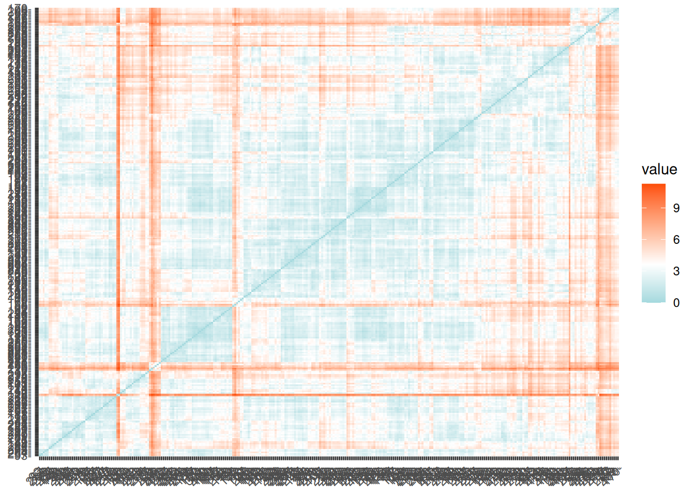
Este gráfico comienza a mostrar qué partidos son más similares entre sí (colores fríos) y cuáles presentan perfiles claramente distintos (colores cálidos), en función de ranking y edad de las jugadoras.
Podemos aplicar el algoritmo de las \(k\)-medias con \(k=2\) sin más que llamar a la función kmeans tal y como sigue:
List of 9
$ cluster : int [1:300] 2 1 2 2 1 2 1 2 1 2 ...
$ centers : num [1:2, 1:8] -0.0946 0.0103 -0.1527 -0.1245 -0.1472 ...
..- attr(*, "dimnames")=List of 2
.. ..$ : chr [1:2] "1" "2"
.. ..$ : chr [1:8] "winner_rank" "loser_rank" "winner_age" "loser_age" ...
$ totss : num 2308
$ withinss : num [1:2] 1183 730
$ tot.withinss: num 1913
$ betweenss : num 395
$ size : int [1:2] 175 125
$ iter : int 1
$ ifault : int 0
- attr(*, "class")= chr "kmeans"
Tarea
¿Qué significa nstart=25 en la anterior llamada a kmeans? (Pista: tiene que ver con la estabilidad de la solución).
Si imprimimos los resultados observamos que el algoritmo ha dividido los partidos en dos conglomerados, cada uno caracterizado por un centro (media) en las variables escaladas. Estos centros representan perfiles promedio de partido en cada clúster, no partidos reales concretos.
Podemos representar gráficamente los resultados utilizando fviz_cluster. Dado que el conjunto de datos tiene más de dos variables, la función realiza internamente un PCA y proyecta los datos sobre las dos primeras componentes principales (ver Capítulo 4).
fviz_cluster(k2, data = df_scaled2)
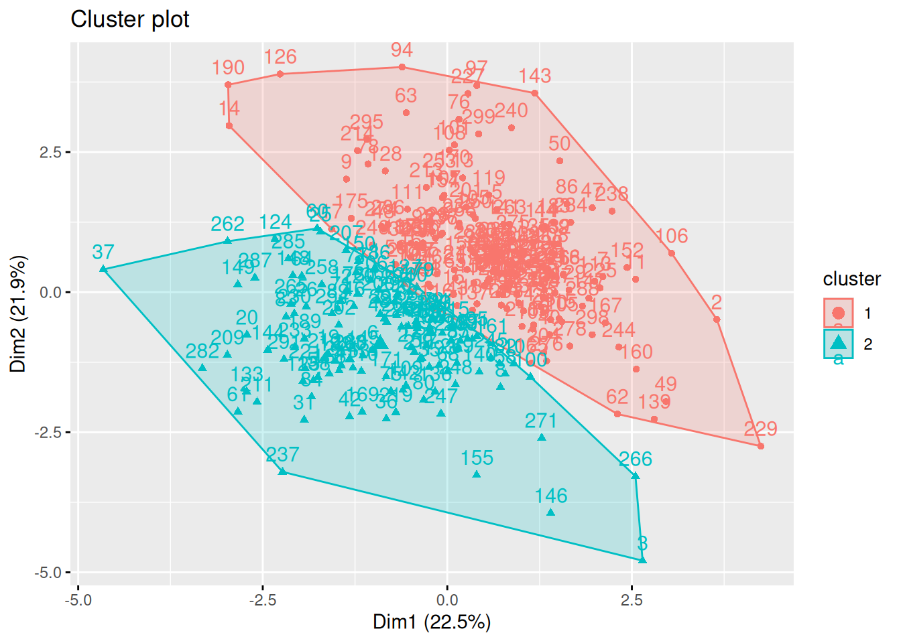
Tarea
¿Qué información estamos perdiendo al representar únicamente dos dimensiones del conjunto de datos? (Repasa el capítulo Capítulo 4 sobre reducción de la dimensionalidad).
Interpretación en el dominio deportivo
En el ejemplo anterior, los clústeres pueden interpretarse, de forma exploratoria, como tipologías de partidos, por ejemplo:
partidos con grandes diferencias de ranking frente a partidos más equilibrados,
partidos protagonizados por jugadoras jóvenes frente a jugadoras más veteranas,
combinaciones de ambos factores.
No obstante, es importante subrayar que:
\(k-medias\) no utiliza información del resultado más allá de las variables incluidas,
los clústeres no tienen un significado deportivo “intrínseco”,
la interpretación requiere siempre conocimiento del dominio.
Este tipo de análisis resulta especialmente útil como paso previo a tareas más complejas, como la segmentación de jugadoras, el análisis de estilos de juego o la construcción de modelos supervisados.
5.7.2 Número óptimo de clústeres
Como hemos comentado anteriormente, en numerosas ocasiones el número óptimo de clústeres de un problema no supervisado lo establece el dominio de aplicación, o más concretamente nuestra necesidad de comunicar los resultados y que estos tengan sentido y sean lo más explicables posibles.
Nombrar los grupos
Nombrar los clusters en un análisis no supervisado es fundamental para dar significado a los resultados, comunicar eficazmente las conclusiones y facilitar la toma de decisiones informadas.
A continuación mostramos los tres métodos más populares para determinar el número óptimo de clústeres: método del codo , silhoutte y método estadístico de la brecha (Gap).
Método del codo
Recordemos que la idea básica de los métodos de división en clústeres, como \(k\)-medias, es definir los clústeres de manera que se reduzca al mínimo la variación total dentro de los clústeres. Podemos calcular este valor de variación total para diferentes elecciones de \(k\) y graficar dichos valores. La ubicación de un cambio de pendiente abrupto (un codo) en la figura se considera generalmente como un indicador del número apropiado de grupos. Veamos un ejemplo en R.
Warning: The `size` argument of `element_line()` is deprecated as of ggplot2 3.4.0.
ℹ Please use the `linewidth` argument instead.
ℹ The deprecated feature was likely used in the ggpubr package.
Please report the issue at <https://github.com/kassambara/ggpubr/issues>.
Warning: The `size` argument of `element_rect()` is deprecated as of ggplot2 3.4.0.
ℹ Please use the `linewidth` argument instead.
ℹ The deprecated feature was likely used in the ggpubr package.
Please report the issue at <https://github.com/kassambara/ggpubr/issues>.
Warning: Using `size` aesthetic for lines was deprecated in ggplot2 3.4.0.
ℹ Please use `linewidth` instead.
ℹ The deprecated feature was likely used in the ggpubr package.
Please report the issue at <https://github.com/kassambara/ggpubr/issues>.
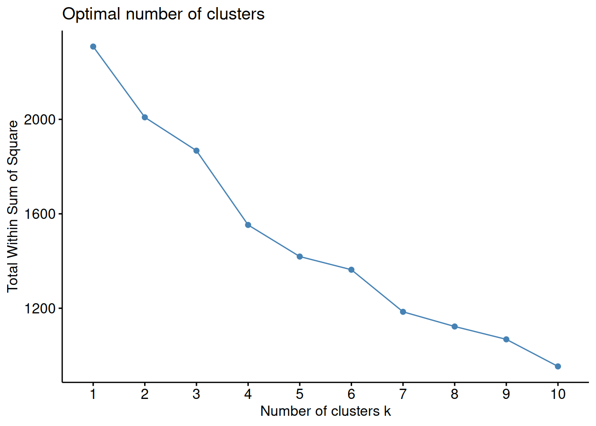
En este caso parece que \(4\) es una buena elección para el número óptimo de clusters. De modo qué:
k4 <-kmeans(df_scaled2, centers =4, nstart =25)fviz_cluster(k4, data = df_scaled2)
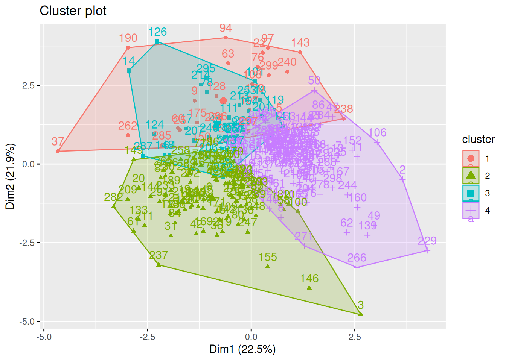
Método de la silueta
Podemos emplear otras técnicas (no supervisadas) para valorar la coherencia, o calidad, de los resultados de un algoritmo de agrupamiento. Silhouette es una de estas técnicas. El enfoque de la silueta media mide la calidad de una agrupación. Es decir, determina hasta qué punto cada observación se encuentra, correctamente ubicada, dentro de su agrupación. Una anchura de silueta media elevada indica una buena agrupación. El método de la silueta media calcula la silueta media de las observaciones para distintos valores de \(k\). El número óptimo de conglomerados \(k\) es el que maximiza la silueta media en un rango de posibles valores de \(k\). Para cada observación \(x_i\) de la base de datos calculamos la siguiente expresión:
donde \(a(x_i)\) es la media de las distancias de la observación \(x_i\) a los puntos en su propio clúster, \(b(x_i)\) es la media de las distancias de \(x_i\) a los puntos en su cluster más cercano (excluyendo el suyo propio). La interpretación es muy sencilla: las observaciones que “encajan” bien en el cluster al que pertenecen tienen valores altos, mientras que las observaciones que “no encajan” bien en el clúster al que han sido asignadas tienen valores pequeños o incluso negativos.
Es posible realizar análisis de agrupamiento con diferente número de clústeres y comparar en cada uno de esos análisis los valores de Silhoutte obtenidos.
La interpretación del coeficiente de silueta es la siguiente: Un valor positivo significa que la observación está bien agrupada. Cuanto más se acerque el coeficiente a \(1\), mejor agrupada está la observación. Por contra, un valor negativo significa que la observación está mal agrupada. Finalmente, un valor igual a \(0\) significa que la observación se encuentra entre dos conglomerados.
El gráfico de siluetas anterior y el coeficiente de silueta medio ayudan a determinar si la agrupación es buena o no. Si una gran mayoría de los coeficientes de silueta son positivos, significa que las observaciones están situadas en el grupo correcto.
Gap
El Método Gap es útil porque ofrece una forma objetiva de determinar el número de clusters sin depender de suposiciones subjetivas. Al comparar los resultados del clustering real con datos de referencia aleatorios, ayuda a evitar la sobreelección o subelección de clusters y permite tomar decisiones más informadas sobre la estructura de los datos.
El proceso es el siguiente:
Se aplica el algoritmo de clustering (por ejemplo, K-Means) a los datos con diferentes valores de \(k\), que representan el número de clusters que se desea evaluar. Se genera un conjunto de resultados de clustering para cada valor de \(k\).
Se generan conjuntos de datos de referencia aleatorios (datos simulados) con la misma estructura y variabilidad que los datos reales, pero sin patrones de clustering. Estos datos aleatorios se utilizan como referencia para evaluar la calidad de los clusters obtenidos en el paso anterior.
Se calcula el estadístico Gap para cada valor de \(k\). Este estadístico compara la dispersión de los datos reales con la dispersión de los datos aleatorios generados. Cuanto más grande sea la brecha entre estas dos dispersiones, más sólido es el clustering para ese valor de \(k\). El estadístico se calcula como la diferencia entre el logaritmo de la dispersión intra-cluster de los datos reales y el logaritmo de la dispersión intra-cluster de los datos de referencia.
Selección del Número Óptimo de Clusters: El valor de \(k\) que maximiza el estadístico anterior se considera el número óptimo de clusters. En otras palabras, se elige el valor de \(k\) donde la brecha entre los datos reales y los datos de referencia es más grande.
Existe una función en R que realiza todo este proceso. En los datos de ejemplo:
set.seed(123)gap_stat <-clusGap(df_scaled2, FUN = kmeans, nstart =25,K.max =10, B =50)print(gap_stat, method ="firstmax")
Supongamos que \(4\) es el número óptimo de clusters.
k4 <-kmeans(df_scaled2, centers =4, nstart =25)fviz_cluster(k4, data = df_scaled2)
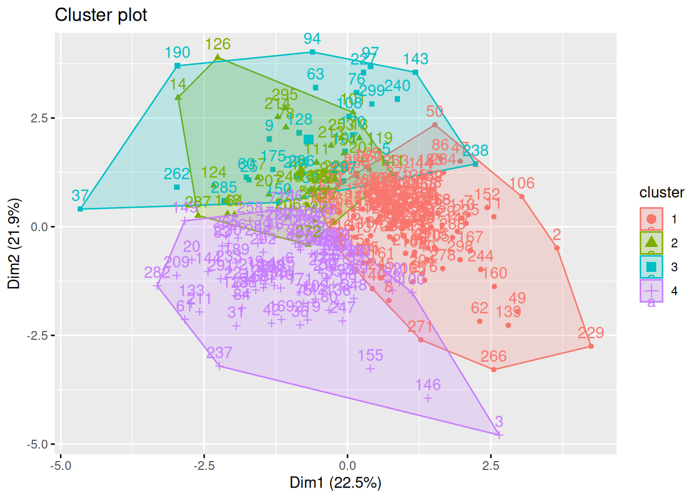
Tarea
El paquete NbClust proporciona 30 (treinta!!!) índices para determinar el número relevante de clústeres y propone a los usuarios el mejor esquema de agrupación a partir de los diferentes resultados obtenidos variando todas las combinaciones de número de clústeres, medidas de distancia y métodos de agrupación. ¡Pruébalo!
*** : The Hubert index is a graphical method of determining the number of clusters.
In the plot of Hubert index, we seek a significant knee that corresponds to a
significant increase of the value of the measure i.e the significant peak in Hubert
index second differences plot.
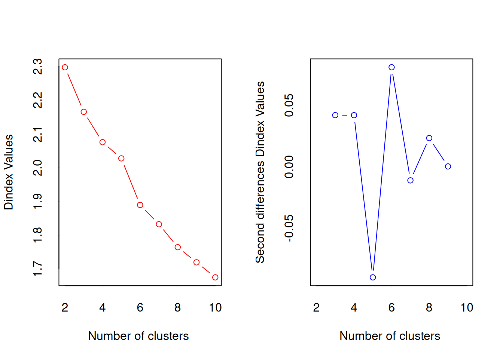
*** : The D index is a graphical method of determining the number of clusters.
In the plot of D index, we seek a significant knee (the significant peak in Dindex
second differences plot) that corresponds to a significant increase of the value of
the measure.
*******************************************************************
* Among all indices:
* 5 proposed 2 as the best number of clusters
* 6 proposed 3 as the best number of clusters
* 2 proposed 5 as the best number of clusters
* 6 proposed 6 as the best number of clusters
* 1 proposed 7 as the best number of clusters
* 1 proposed 9 as the best number of clusters
* 2 proposed 10 as the best number of clusters
***** Conclusion *****
* According to the majority rule, the best number of clusters is 3
*******************************************************************
# Method Agreement Procedure:
The choice of 2 clusters is supported by 6 (21.43%) methods out of 28 (Silhouette, Ch, Duda, Pseudot2, Beale, Mcclain).
plot(n_clust)
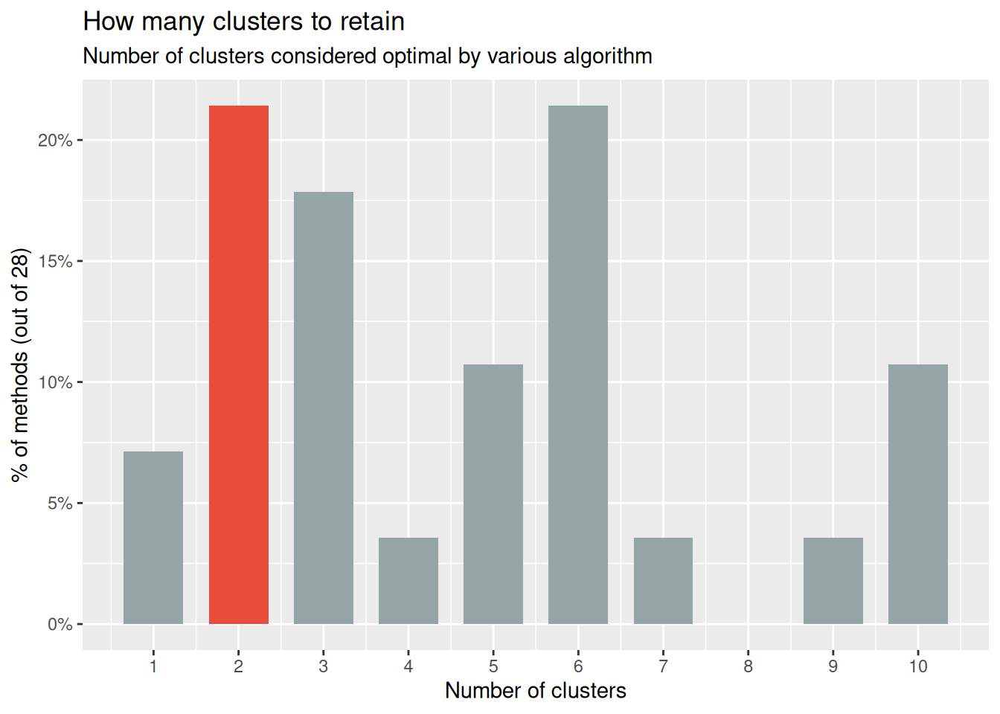
Creemos que te ha quedado claro que no existe una regla única para la elección del número óptimo de clústeres. Al contrario, hay muchos métodos para estimar el mejor número de clústeres y, obviamente, no todos ellos dan el mismo resultado. Se recomienda considerar los resultados de diferentes métodos y explorar varios números de clústeres buscando siempre una coherente interpretación de los resultados.
En el ejemplo, eligiendo \(3\) (quizás no sea la elección más evidente, pero ¿será interpretable?) como el número de clusters, podemos obtener los resultados finales tratando de nombrar los clusters:
Intenta “nombrar” los \(4\) clusters del ejemplo. Para ello deberías fijarte también en las componentes principales.
5.8 Cluster Jerárquico
Las técnicas de agrupamiento jerárquico generan una clasificación iterativa de clústeres anidados mediante la unión o la separación de clústeres creados en etapas anteriores. Existen dos alternativas posibles:
Aglomerativos: en la versión aglomerativa, cada observación comienza siendo un clúster, y en cada iteración se unen en un único clúster los dos clústeres más similares, hasta alcanzar una situación final en la que todos las observaciones pertenecen a un único clúster. Esta versión se conoce como AGNES (“Agglomerative Nesting”).
Divisivos: en la versión divisiva, todas las observaciones comienzan en un único clúster y las divisiones se realizan de forma recursiva, a medida que se desciende en la jerarquía, terminando cada observación formando un único clúster individual. Esta versión se conoce como DIANA (“Divise Analysis”).
5.8.1 Cluster jerárquico aglomerativo
El clustering aglomerativo comienza con \(n\) conglomerados (uno por cada dato) y, en cada paso, va fusionando los 2 grupos más similares hasta que hay un único grupo que contiene al total de datos.
Algoritmo
Input: matriz de disimilitud \(D=(d_{ij}),i,j=1,\dots, n\)
Inicializar los clusters: \(n\) clusters \(S_i=\{i\}, i=1,\dots,n\)
Inicializar el conjunto de clusters que faltan por unir: \(Q=\{1,\dots,n\}\)
Seleccionar los 2 clusters más similares \(S_j\) y \(S_k\) : \(argmin_{j,k \in Q} \ d_{jk}\)
Con ellos, crear un nuevo cluster: \(S_l \leftarrow \{S_j \cup S_k \}\)
Guardar dichos clusters como no disponibles: \(Q \leftarrow Q\backslash \{j,k\}\)
Si \(S_l \neq \{1,\dots,n\}\) entonces: \(Q \leftarrow Q\cup \{l\}\)
Para cada \(i \in Q\), actualizar la matriz de disimilitud \(d(i,l)\)
Repetir el paso 2 hasta que no queden cluster por unir
Se necesita un criterio de conexión o “linkage” que especifique cómo se determina el parecido (o la disimilitud) entre dos clústeres. Este criterio no es único. Algunos de los criterios más comunes son:
Método de Ward
Minimiza la suma de las diferencias cuadradas dentro de los clústeres. Minimiza la varianza total dentro del conglomerado.
Agrupamiento de enlace completo
Minimiza la disimilitud máxima entre las observaciones de dos clústeres. Calcula todas las disimilitudes por pares entre los elementos del conglomerado A y los elementos del conglomerado B, y considera el mayor valor (es decir, el valor máximo) de estas disimilitudes como la distancia entre los dos conglomerados
Minimiza el promedio de las disimilitudes entre las observaciones de dos clústeres. Calcula todas las disimilitudes por pares entre los elementos del conglomerado A y los elementos del conglomerado B, y considera la media de estas disimilitudes como la distancia entre los dos conglomerados:
siendo \(n_A\) y \(n_B\) el número de elementos en los grupos \(A\) y \(B\), respectivamente.
Agrupamiento de enlace mínimo o simple
Minimiza las disimilitudes entre las observaciones más cercanas de dos clústeres. Es decir, calcula todas las disimilitudes por pares entre los elementos del conglomerado A y los elementos del conglomerado B, y considera la menor de estas disimilitudes como criterio de vinculación
Calcula la disimilitud entre el centroide del conglomerado A y el centroide del conglomerado B. Agrupación de enlace de centroides.
Para recordar
El criterio de agrupación o conexión es un parámetro fundamental en el resultado final del clustering jerárquico.
5.8.2 Cluster jerárquico divisivo
El clustering jerárquico divisivo es una estrategia de agrupamiento que sigue un enfoque descendente: comienza con todos los datos en un solo conglomerado y, a través de divisiones sucesivas, va creando subgrupos más pequeños hasta alcanzar un criterio de parada predefinido. Una de las técnicas más conocidas es el algorimo DIANA:
Comienza con todos los datos en un único cluster y, recursivamente, divide cada cluster en 2 cluster hijo.
En cada paso el grupo más grande se divide hasta que cada objeto es un único conglomerado (u otro criterio de parada).
El clúster más grande será aquel de mayor diámetro, es decir, el que tiene mayor desemejanza entre dos de sus elementos o aquel con mayor desemejanza media. Es decir, dados los cluster \(S=\{S_1,\dots,S_r\}\), el cluster más grande \(S_j\) es aquel que
La observación más lejana \(i^{*} \in S_j\), \(i^{*}=argmax_{i \in S_j} \ d_{i,i'}\), es la que inicia el nuevo cluster \(S_{r+1}=\{i^{*}\}\).
Se asignan a este nuevo cluster \(S_{r+1}\) los puntos que sean más cercanos a él que al cluster del que provienen \(S_j\).
Hay otras alternativas para realizar clustering jerárquico divisivo. Por ejemplo, bisecting \(k\)-means que divide el cluster de mayor diámetro en 2 cluster hijos haciendo uso de las \(k\)-medias o los \(k\)-medoides.
5.8.3 Cluster jerárquico en R
Existen diferentes funciones disponibles en R para calcular el clustering jerárquico. Las funciones más utilizadas son:
hclust [en el paquete stats] y agnes [en el paquete cluster] para el clustering jerárquico aglomerativo
diana [en el paquete cluster] para clustering jerárquico divisivo
El coeficiente aglomerativo mide la cantidad de estructura de agrupamiento encontrada (los valores más cercanos a \(1\) sugieren una fuerte estructura de agrupamiento).
Esto nos permite encontrar ciertos métodos de clustering jerárquico que pueden identificar estructuras de agrupación más fuertes. Aquí vemos que el método de Ward identifica la estructura de agrupación más fuerte de los cuatro métodos evaluados.
# Métodos evaluadosm <-c( "average", "single", "complete", "ward")names(m) <-c( "average", "single", "complete", "ward")# Función para calcular el coeficiente de agrupamientoac <-function(x) {agnes(df_scaled2, method = x)$ac}map_dbl(m, ac)
average single complete ward
0.8498240 0.7175544 0.8908784 0.9465550
En ocasiones se emplea una representación gráfica en forma de árbol llamada dendrograma que ilustra las agrupaciones derivadas de la aplicación de una técnica de agrupamiento jerárquico. En el eje de ordenadas se presenta la distancia a la que se unen los diferentes clústeres. Las observaciones aparecen en el eje de abscisas.
Fíjate cómo obtenemos diferentes resultados según el método propuesto.
hc2 <-agnes(df_scaled2, method ="ward" )# Drendrogramapltree(hc2, cex =0.6, hang =-1, main ="Dendrograma de AGNES")
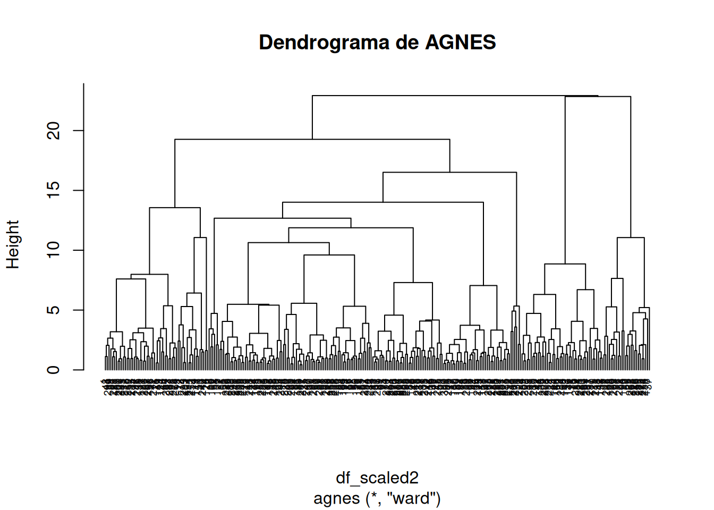
La pregunta a la que nos enfrentamos es a qué distancia cortar el dendrograma, es decir, dónde dibujar una línea horizontal que determine el número óptimo de clústeres. Por ejemplo, en nuestro caso, cortar en \(10\) generaría dos clústeres. Sin embargo, cortar en \(5\) generaría cuatro clústeres, dos a la izquierda, dos a la derecha.
A continuación aplicamos el método divisivo.
# Clustering jerárquico divisivohc4 <-diana(df_scaled2)# Coeficiente de división; cantidad de estructura de agrupación encontradahc4$dc
[1] 0.8767046
## [1] 0.8514345# Drendrogramapltree(hc4, cex =0.6, hang =-1, main ="Dendrogram de DIANA")
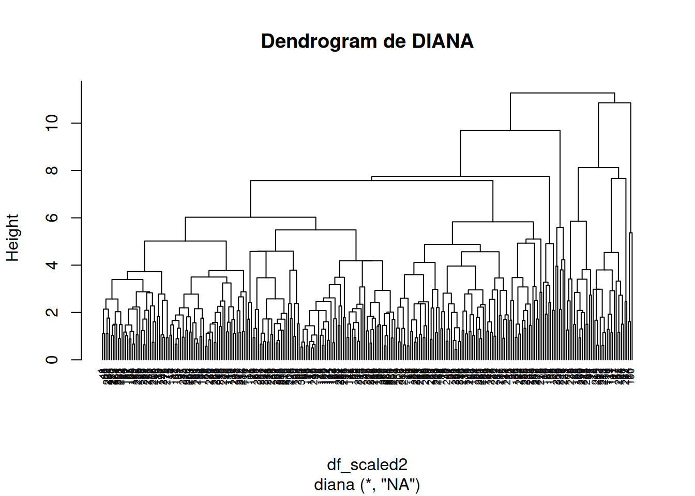
En el dendrograma anterior, cada hoja corresponde a una observación. A medida que ascendemos en el árbol, las observaciones que son similares entre sí se combinan en ramas, que a su vez se fusionan a mayor altura.
La altura de la fusión, que figura en el eje vertical, indica la (di)similitud entre dos observaciones. Cuanto mayor es la altura de la fusión, menos similares son las observaciones.
Atención
Cuando empleamos un dendrograma, las conclusiones sobre la proximidad de dos observaciones sólo pueden extraerse a partir de la altura a la que se fusionan las ramas que contienen primero esas dos observaciones. No podemos utilizar la proximidad de dos observaciones a lo largo del eje horizontal como criterio de su similitud.
Tal como hemos indicado, la altura del corte del dendrograma controla el número de clusters obtenidos. Desempeña el mismo papel que la \(k\) en la agrupación \(k\)-means. Para identificar subgrupos (es decir, clusters), podemos cortar el dendrograma con la función cutree de R:
# Método de Wardhc5 <-hclust(d, method ="ward.D2" )# Cortamos en 4 clusterssub_grp <-cutree(hc5, k =4)# Visualizamos el corte en el dendrogramaplot(hc5, cex =0.6)rect.hclust(hc5, k =4, border =2:5)
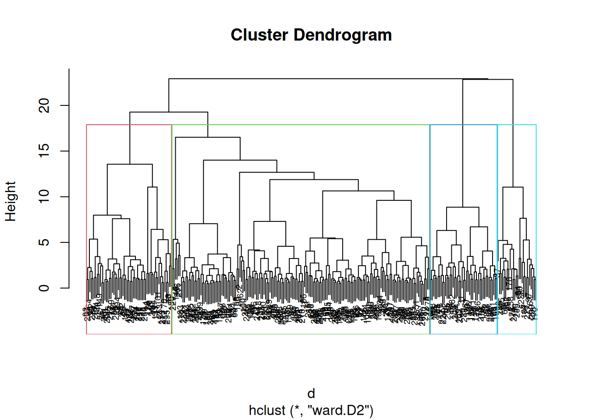
# Número de observaciones en cada clustertable(sub_grp)
Podemos ir un paso más allá y comparar dos dendrogramas. En este ejemplo comparamos los resultados obtenidos con el método de “Ward” frente al “completo”.
library(dendextend)# Matriz de distanciasres.dist <-dist(df_scaled2, method ="euclidean")# Calcuamos los dos clustering jerárquicoshc1 <-hclust(res.dist, method ="complete")hc2 <-hclust(res.dist, method ="ward.D2")# Dendrogramasdend1 <-as.dendrogram (hc1)dend2 <-as.dendrogram (hc2)# los enfrentamostanglegram(dend1, dend2)
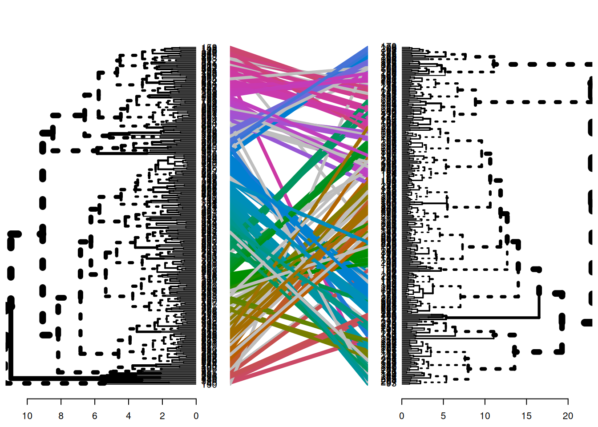
El resultado muestra nodos “únicos”, con una combinación de etiquetas/elementos no presentes en el otro árbol, resaltados con líneas discontinuas. La calidad de la alineación de los dos árboles puede medirse utilizando la función de entrelazamiento. El entrelazamiento es una medida entre \(1\) (entrelazamiento total) y \(0\) (sin entrelazamiento). Un coeficiente de entrelazamiento menor corresponde a una buena alineación.
dend_list <-dendlist(dend1, dend2)tanglegram(dend1, dend2,highlight_distinct_edges =FALSE, # Turn-off dashed linescommon_subtrees_color_lines =FALSE, # Turn-off line colorscommon_subtrees_color_branches =TRUE, # Color common branches main =paste("entanglement =", round(entanglement(dend_list), 2)) )
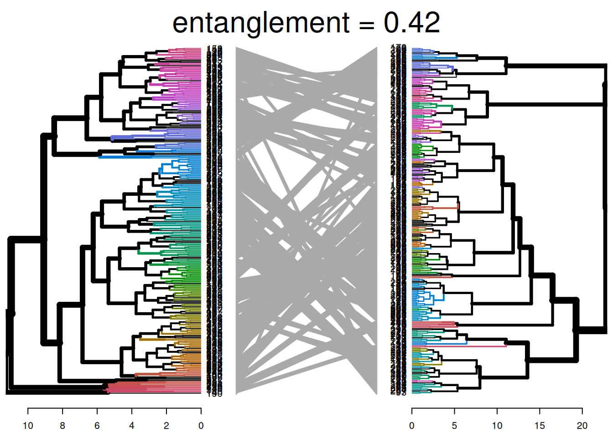
Tal y como hacíamos en el clustering no jerárquico, podemos aplicar métodos para determinar el número óptimo de clusters. Por ejemplo, el método del codo:
fviz_nbclust(df, FUN = hcut, method ="wss")
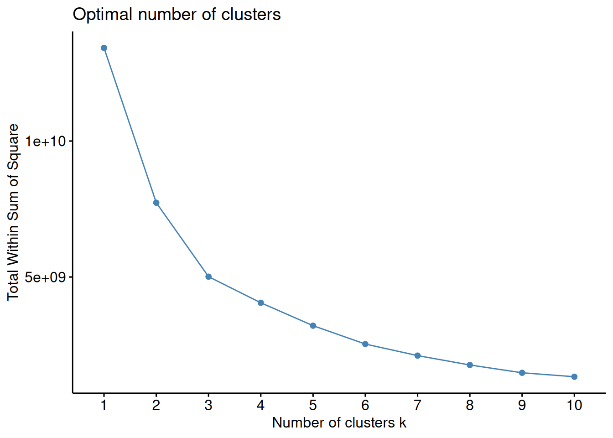
En el ejemplo propuesto, elegir \(4\) como número óptimo parece una buena elección. Sin embargo, y como pasaba en los métodos no jerárquicos, métodos alternativos pueden llevarnos a soluciones alternativas.
#fviz_nbclust(df, FUN = hcut, method = "silhouette")
#gap_stat <- clusGap(df, FUN = hcut, nstart = 25, K.max = 10, B = 50)#fviz_gap_stat(gap_stat)
Ventajas del clustering jerárquico
Jerarquía de clusters: El clustering jerárquico crea una jerarquía de clusters que permite analizar los datos a diferentes niveles de granularidad. Es posible, por tanto, explorar tanto clusters globales como subgrupos más específicos. Al tener una jerarquía de clusters, puedes tomar decisiones a diferentes niveles de detalle. Esto es valioso para la segmentación de mercado, la taxonomía de especies, la organización de documentos, entre otros.
Interpretación visual: El dendrograma facilita la interpretación visual de cómo se agrupan los datos y cómo se relacionan entre sí.
No requiere especificación previa del número de clusters: A diferencia de algunos algoritmos de clustering que requieren que especifiques el número de clusters de antemano como \(k\)-medias, el clustering jerárquico no necesita esta información.
Identificación de subgrupos: El clustering jerárquico es eficaz para la identificación de subgrupos dentro de clusters más grandes. Esto es útil en áreas como la segmentación de clientes, donde se pueden tener clusters generales y luego identificar subgrupos más específicos.
Detección de outliers: El clustering jerárquico puede ayudar a identificar outliers (valores atípicos) que no se ajustan a ningún cluster específico y que pueden ser importantes en el análisis de datos.
No sensible a la inicialización: A diferencia de algunos algoritmos de clustering, como el \(k\)-means, el clustering jerárquico no es sensible a la inicialización de centroides, lo que puede ayudar a evitar soluciones subóptimas.
Análisis exploratorio de datos: El clustering jerárquico es útil en la exploración inicial de datos, ya que proporciona una visión general de cómo se agrupan naturalmente los datos sin la necesidad de conocimiento previo.
Desventajas del clustering jerárquico
Requiere definir un criterio de corte: Para convertir la jerarquía en clusters finales, es necesario definir un criterio de corte en el dendrograma. Esta elección puede ser subjetiva y afectar los resultados. Así mismo hay que definir el tipo de enlace a emplear (y la medida de disimilitud) Cada una de estas decisiones puede influir mucho en los resultados obtenidos. En la práctica, probamos varias opciones diferentes y buscamos la que ofrece la solución más útil o interpretable.
Con estos métodos, no hay una única respuesta correcta: debe considerarse cualquier solución que exponga algunos aspectos interesantes de los datos.
No es óptimo para todos los tipos de datos: El clustering jerárquico funciona mejor cuando los clusters tienen una estructura jerárquica natural. En algunos casos, donde no existe una jerarquía clara, otros métodos de clustering pueden ser más apropiados.
No es adecuado para datos de alta dimensión: El rendimiento del clustering jerárquico puede disminuir en conjuntos de datos de alta dimensión debido a la maldición de la dimensionalidad. Este fenómeno significa que al aumentar el número de dimensiones de un problema se pueden agravar muchos de los problemas que aparecen en dimensiones bajas (curse of dimensionality, Bellman y Kalaba (1961)).
No siempre produce resultados reproducibles: La estructura jerárquica resultante puede variar según la métrica de distancia y el enfoque de enlace utilizado, lo que puede dar lugar a resultados no siempre reproducibles.
Sin capacidad de predicción: Las técnicas de agrupamiento jerárquicas no son útiles a la hora de predecir el clúster al que pertenecen nuevas observaciones.
5.9 Mapas auto-organizados
Los Mapas Auto-organizados de Kohonen (SOM por sus siglas en inglés, “Self-Organizing Maps”) no solo son una poderosa herramienta para la reducción de la dimensión, sino que también son ampliamente utilizados como algoritmo de clustering. Aunque la reducción de la dimensión es una de sus aplicaciones más destacadas, los SOM también tienen la capacidad de agrupar datos de manera efectiva.
El proceso de clustering con SOM implica organizar datos en grupos o clusters de manera que los elementos dentro de un mismo grupo sean similares entre sí en función de ciertas características. Un SOM consiste en una malla de neuronas organizadas en una estructura topológica bidimensional, usualmente una cuadrícula rectangular o hexagonal. Cada neurona tiene un vector de pesos asociado, de la misma dimensión que los datos de entrada.
Sea un conjunto de datos de entrada \(\mathbf{X} \in \mathbb{R}^p\), el SOM está compuesto por una malla bidimensional de \(K\) neuronas o prototipos. Cada neurona está “definida” por un vector de pesos \(\mathbf{w}_j \in \mathbb{R}^p\), donde \(j\) es el índice de la neurona en la malla. Cada neurona representa una ubicación en el espacio SOM.
A continuación se explica cómo funciona el algoritmo:
Inicialización: Se inicializan los pesos \(\mathbf{w}_j\) de las neuronas aleatoriamente (¿Qué técnica, ya estudiada en la asignatura, se te ocurre para inicializar los pesos de las neuronas?).
Selección del vector de entrada: En cada iteración, se selecciona aleatoriamente un vector de entrada \(\mathbf{x}_i\) del conjunto de datos.
Cálculo de la neurona ganadora: Se encuentra la neurona cuyo vector de pesos \(\mathbf{w}_j\) sea más cercano a \(\mathbf{x}_i\) en términos de distancia Euclídea: \[j^* = \arg\min_{j} \| \mathbf{x}_i - \mathbf{w}_j \|.\] Es decir, encontramos su prototipo o neurona más cercana. Esta neurona es conocida como BMU (Best Matching Unit).
Actualización de pesos: Se actualizan los pesos de la BMU y de sus vecinos en base a la siguiente ecuación: \[ \mathbf{w}_j(t+1) = \mathbf{w}_j(t) + \alpha(t) h_{j,j^*}(t) (\mathbf{x}_i - \mathbf{w}_j(t)),\] donde:
\(\alpha(t)\) es la tasa de aprendizaje, que decrece con el tiempo \(t\) (número de iteraciones)
\(h_{j,j^*}(t)\) es la función de vecindad que decrece con la distancia entre \(j\) e \(j^{*}\) en la malla, comúnmente definida como una función gaussiana: \[h_{j,j^*}(t) = \exp\left(-\frac{\| r_j - r_{j^*} \|^2}{2 \sigma^2(t)}\right),\] donde \(r_j\) es la posición de la neurona \(j\) en la malla y \(\sigma(t)\) es el radio de vecindad, que también decrece con el tiempo.
Esta actualización se hace tanto para la neurona ganadora como para sus vecinas.
Es decir, se presentan los datos al SOM, y cada dato se asigna a la neurona cuyos pesos son más similares a los atributos del dato. Las neuronas ganadoras (aquellas a las que se asigna un dato) y sus vecinas en el mapa SOM se ajustan para que se parezcan más al dato presentado.
Repetición: Se repiten los pasos anteriores por un número determinado de iteraciones o hasta la convergencia del modelo.
Después del entrenamiento, las neuronas en el mapa SOM que están cerca una de la otra representan clusters de datos. Los datos que se asignaron a estas neuronas durante el entrenamiento se consideran miembros de un mismo cluster. Los SOM tienen propiedades interesantes como la preservación topológica, garantizando que las neuronas cercanas en la malla tendrán pesos similares.
Función objetivo
El algoritmo de entrenamiento de los Mapas de Kohonen (SOM) puede entenderse como un proceso de minimización de una función de coste mediante descenso de gradiente.
El objetivo del entrenamiento en los SOM es minimizar la siguiente función de coste: \[ E = \sum_{x_i \in \mathbf{X}} \sum_{j} h_{j,j^*} \| \mathbf{x}_i - \mathbf{w}_j \|^2\] donde:
\(\mathbf{X}\) es el conjunto de datos de entrada.
\(j^*\) es la neurona ganadora para cada \(\mathbf{x}_i\).
\(h_{j,j^*}\) es la función de vecindad que determina la influencia de la neurona \(j\) en la actualización de pesos.
Esta función de coste representa una combinación de dos principios: 1. La asignación de cada \(\mathbf{x}_i\) a una neurona con pesos \(\mathbf{w}_j\) minimiza la distancia entre los datos y los prototipos. 2. Preservación topológica: La regularización impuesta por \(h_{j,j^*}\) garantiza que neuronas cercanas tengan pesos similares, permitiendo que el mapa refleje la estructura del espacio de entrada.
Veámos cómo se llega a la actualización de las neuronas. Como buscamos minimizar \(E\), aplicaremos el descenso del gradiente sobre los pesos que definen cada neurona \(\mathbf{w}_j\). Esto es, derivamos la función de coste con respecto a \(\mathbf{w}_j\): \[\frac{\partial E}{\partial \mathbf{w}_j} = -\sum_{\mathbf{x}_i \in \mathbf{X}} h_{j,j^*} 2 (\mathbf{x}_i - \mathbf{w}_j).\]
El ajuste de pesos se obtiene usando la regla de actualización:
Por motivos de coste computacional, este ajuste se realiza para la observación particular que ha sido escogida en la iteración, es decir, para \(\mathbf{x}_i\) en lugar de para todo los puntos del conjunto de datos. Así: \[\mathbf{w}_j(t+1) = \mathbf{w}_j(t) + \alpha(t) h_{j,j^*}(t) (\mathbf{x}_i - \mathbf{w}_j(t)),\]
donde:
\(\alpha(t)\) es la tasa de aprendizaje que decrece con el tiempo (iteraciones).
\(h_{j,j^*}(t)\) es la función de vecindad que decrece con la distancia en la malla y con el tiempo. La idea es que en las primeras iteraciones, la vecindad es amplia, permitiendo un ajuste global del mapa SOM. En las últimas iteraciones, la vecindad es pequeña y los pesos de las neuronas se ajustan más localmente.
Aquí vemos que la actualización de los pesos se mueve en dirección a \(\mathbf{x}_i\), ponderada por la tasa de aprendizaje \(\alpha(t)\) y la función de vecindad \(h_{j,j^*}(t)\), lo que permite que las neuronas cercanas a la BMU también se ajusten gradualmente.
Ventajas
Topología preservada: Una ventaja clave de los SOM en el clustering es que preservan la topología de los datos. Esto significa que los clusters en el SOM reflejan la estructura de vecindad en los datos originales, lo que facilita la interpretación de los resultados.
Escalabilidad: Los SOM pueden manejar grandes conjuntos de datos y dimensiones elevadas, lo que los hace útiles para aplicaciones del mundo real con datos complejos.
Flexibilidad: Los SOM pueden utilizarse con diversos algoritmos de agrupamiento, lo que permite adaptarlos a diferentes tipos de datos y objetivos de análisis.
Visualización: La representación en un espacio bidimensional o tridimensional facilita la visualización de datos complejos, lo que permite una comprensión más intuitiva.
Exploración interactiva: Los SOM permiten la exploración interactiva de datos, ya que los usuarios pueden navegar por el mapa para inspeccionar las regiones y sus contenidos.
Reducción de ruido: Los SOM a menudo ayudan a reducir el ruido y la redundancia en los datos, lo que mejora la calidad del análisis.
Desventajas
Sensibilidad a la inicialización: Los SOM son sensibles a la inicialización de los pesos de las neuronas. Los resultados pueden variar significativamente según cómo se configuren los pesos iniciales, lo que significa que pueden converger a soluciones subóptimas si no se seleccionan adecuadamente los valores iniciales.
Determinación del tamaño del mapa: Elegir el tamaño adecuado para el mapa SOM puede ser un desafío. Si el mapa es demasiado pequeño, puede no capturar la estructura de los datos correctamente, mientras que si es demasiado grande, puede sobreajustarse a los datos y perder la capacidad de generalización.
Interpretación de los resultados: La interpretación de los resultados de un SOM puede ser complicada, especialmente en mapas de alta dimensión. Mapear los clusters y las relaciones entre las neuronas en el mapa a menudo requiere conocimiento experto del dominio.
Requiere ajuste de hiperparámetros: El rendimiento de un SOM puede depender de la elección adecuada de hiperparámetros, como la tasa de aprendizaje, la vecindad de las neuronas y el número de iteraciones. En algunos casos, encontrar los valores óptimos puede ser un proceso de prueba y error.
Puede converger a mínimos locales: Como con muchos algoritmos de optimización, los SOM pueden converger a mínimos locales en lugar del mínimo global, lo que puede llevar a soluciones subóptimas.
Requiere grandes conjuntos de datos: Los SOM pueden no funcionar bien en conjuntos de datos pequeños o altamente desequilibrados, ya que su eficacia se basa en la capacidad de aprender patrones significativos a partir de una cantidad suficiente de datos.
Vamos a estudiar su implementación en R con la libraría kohonen.
library(kohonen)
Attaching package: 'kohonen'
The following object is masked from 'package:purrr':
map
SOM of size 4x4 with a hexagonal topology and a bubble neighbourhood function.
The number of data layers is 1.
Distance measure(s) used: sumofsquares.
Training data included: 1284 objects.
Mean distance to the closest unit in the map: 2.413.
par(mfrow =c(1,2))plot(df.som, type="codes")plot(df.som, type="mapping", col =as.numeric(as.factor(df$deposit))+1, pch=20)
# versión supervisada# kohmap <- xyf(as.matrix(df.st), as.factor(df$deposit),grid = somgrid(4, 4, "hexagonal"), rlen=100)#plot(kohmap, type="codes", main = c("Codes X", "Codes Y"))#plot(kohmap, type="mapping", col = as.numeric(as.factor(df$deposit))+1, pch=20)
Bellman, Richard, y Robert Kalaba. 1961. «Reduction of dimensionality, dynamic programming, and control processes».
Goodall, David W. 1966. «A new similarity index based on probability». Biometrics, 882-907.
Gower, John C. 1971. «A general coefficient of similarity and some of its properties». Biometrics, 857-71.
Hartigan, John A, y Manchek A Wong. 1979. «Algorithm AS 136: A k-means clustering algorithm». Journal of the royal statistical society. series c (applied statistics) 28 (1): 100-108.
Kelleher, John D, Brian Mac Namee, y Aoife D’arcy. 2020. Fundamentals of machine learning for predictive data analytics: algorithms, worked examples, and case studies. MIT press.
Xu, Dongkuan, y Yingjie Tian. 2015. «A comprehensive survey of clustering algorithms». Annals of Data Science 2: 165-93.